Groups
Creating a Group¶
| In GeoNode is possible to create new groups with set of permissions which will be inherited by all the group members. | The creation of a Group can be done both on the GeoNode UI and on the Admin Panel, we will explain how in this paragraph.
The Create Groups link of About menu in the navigation bar allows administrators to reach the Group Creation Page.
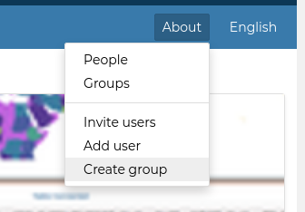
The following form will open.
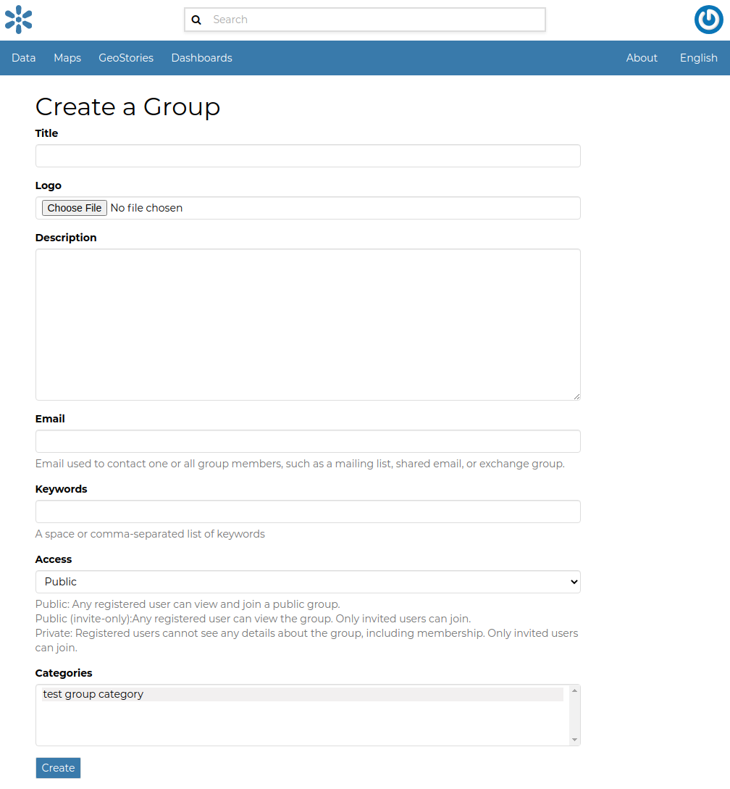
Fill out all the required fields and click Create to create the group.
The Group Details Page will open.
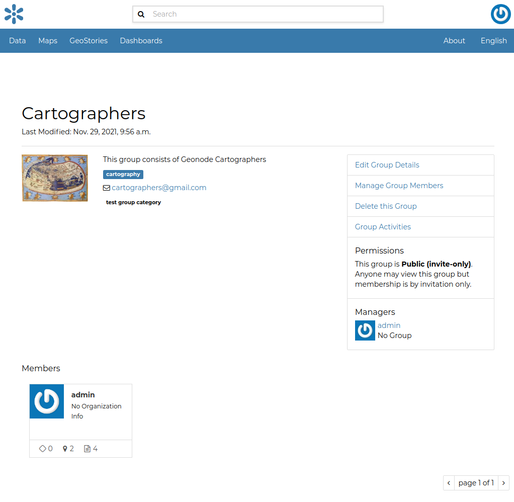
The new created group will be searchable in the Groups List Page.
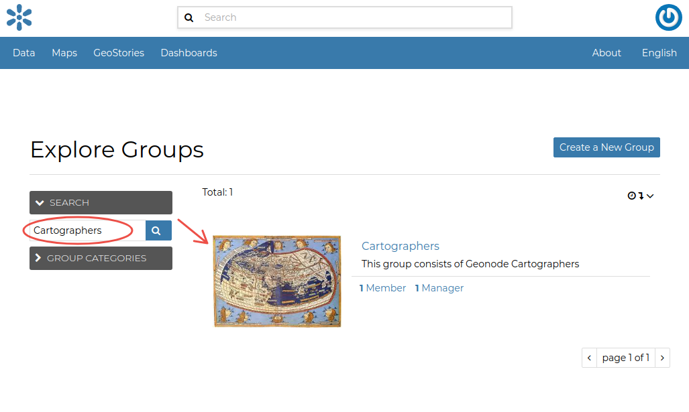
Important notes
The Create a New Group button on the Groups List Page allows to reach the Group Creation Form.
| As already mentioned above, groups can also be created from the Django-based Admin Interface of GeoNode. | The Groups link of the AUTHENTICATION AND AUTHORIZATION section allows to manage basic Django groups which only care about permissions. | To create a GeoNode group you should take a look at the GROUPS section.
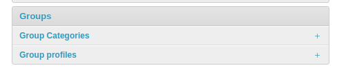
As you can see, GeoNode provides two types of groups. You will learn more about that in the next paragraph.
Types of Groups¶
In GeoNode users can be grouped through a Group Profile, an enhanced Django group which can be enriched with some further information such as a description, a logo, an email address, some keywords, etc. It also possible to define some Group Categories based on which those group profiles can be divided and filtered.
A new Group Profile can be created as follow:
-
click on the Group Profile
+ Addbutton -
fill out all the required fields (see the picture below), Group Profiles can be explicitly related to group categories
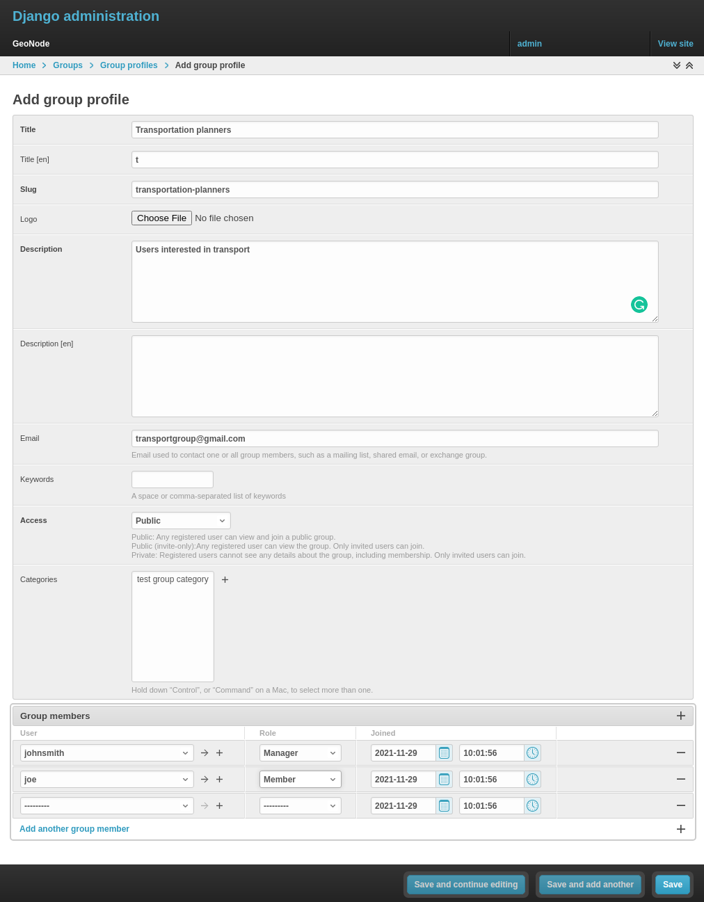
- click on
Saveto perform the creation, the new created group profile will be visible in the Group Profiles List
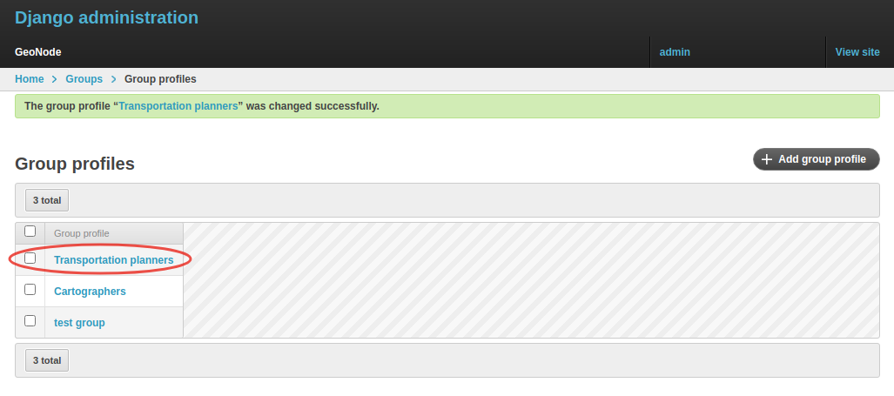
Group Categories¶
Group Profiles can also be related to Group Categories which represents common topics between groups. In order to add a new Group Category follow these steps:
-
click on the Group Categories
+ Add group categorybutton -
fill out the creation form (type name and description)
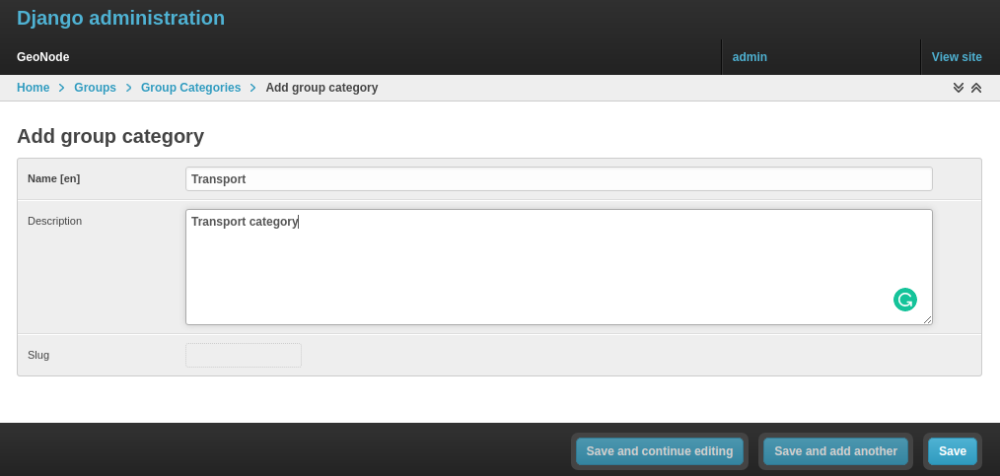
- click on
Saveto perform the creation, the new created category will be visible in the Group Categories List
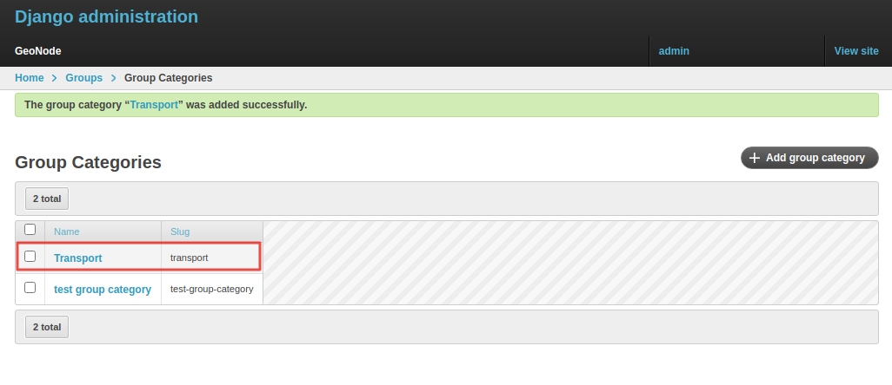
Managing a Group¶
Through the Groups link of About menu in the navigation bar, administrators can reach the Groups List Page.
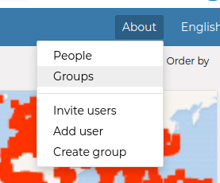
In that page all the GeoNode Group Profiles are listed.
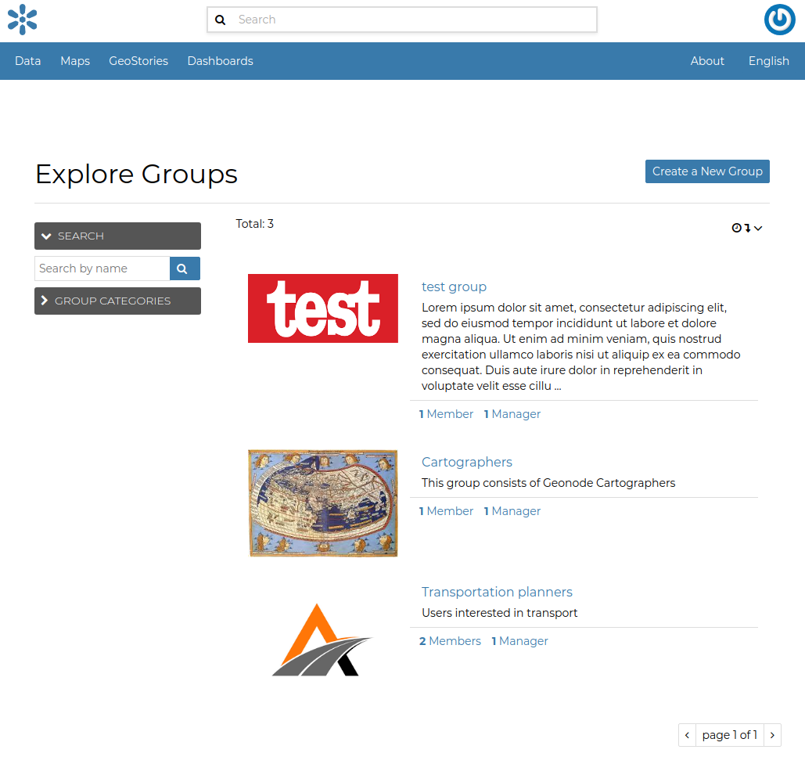
For each group some summary information (such as the title, the description, the number of members and managers) are displayed near the Group Logo.
Administrators can manage a group from the Group Profile Details Page which is reachable by clicking on the title of the group.
As shown in the picture above, all information about the group are available on that page:
- the group Title;
- the Last Editing Date which shows a timestamp corresponding to the last editing of the group properties;
- the Keywords associated with the group;
- Permissions on the group (Public, Public(invite-only), Private);
- Members who join the group;
- Managers who manage the group.
There are also four links:
-
The
Edit Group Detailslink opens the Group Profile Form through which the following properties can be changed: -
Title.
- Logo (see next paragraphs).
- Description.
- Email, to contact one or all group members.
- Keywords, a comma-separated list of keywords.
-
Access, which regulates permissions:
- Public: any registered user can view and join a public group.
- Public (invite-only): only invited users can join, any registered user can view the group.
- Private: only invited users can join the group, registered users cannot see any details about the group, including membership.
-
Categories, the group categories the group belongs to.
-
Manage Group Members(see next paragraphs). - the
Delete this Group, click on it to delete the Group Profile. GeoNode requires you to confirm this action.
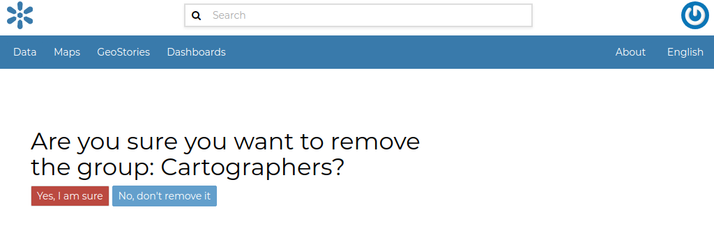
- the
Group Activitiesdrives you to the Group Activities Page where you can see all datasets, maps and documents associated with the group. There is also a Comments tab which shows comments on those resources.
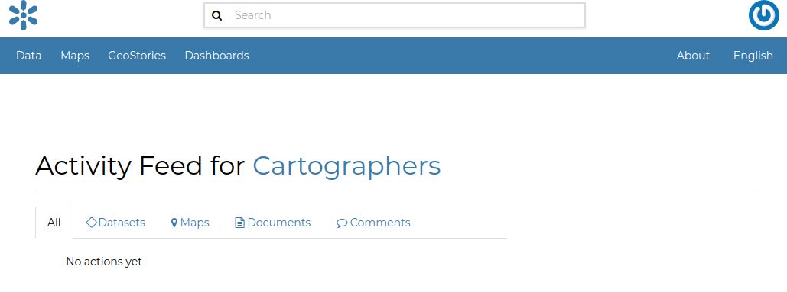
Group Logo¶
Each group represents something in common between its members. So each group should have a Logo which graphically represents the idea that identify the group.
On the Group Profile Form page you can insert a logo from your disk by click on Browse....
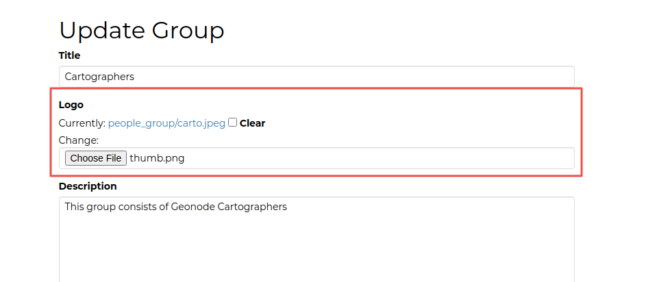
| Click on Update to apply the changes.
| Take a look at your group now, you should be able to see that logo.
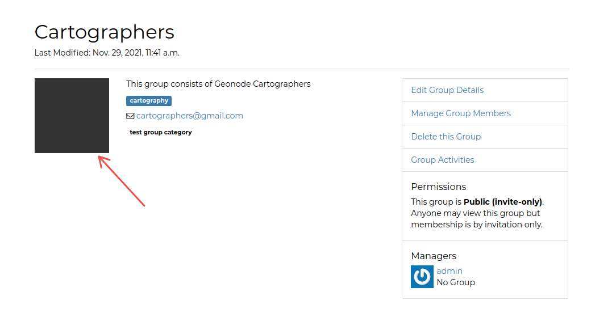
Managing Group members¶
The Manage Group Members link opens the Group Members Page which shows Group Members and Group Managers.
Managers can edit group details, can delete the group, can see the group activities and can manage memberships.
Other Members can only see the group activities.
| In Public Groups, users can join the group without any approval.
Other types of groups require the user to be invited by the group managers.
| Only group managers can Add new members.
In the picture below, you can see the manager can search for users by typing their names into the User Identifiers search bar.
Once found, he can add them to the group by clicking the Add Group Members button.
The Assign manager role flag implies that all the users found will become managers of the group.
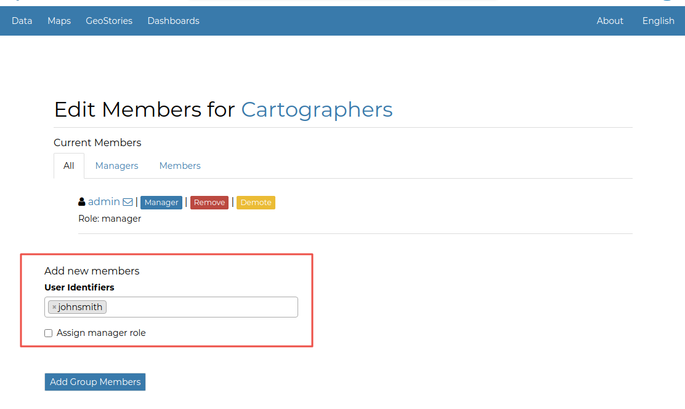
The following picture shows you the results.
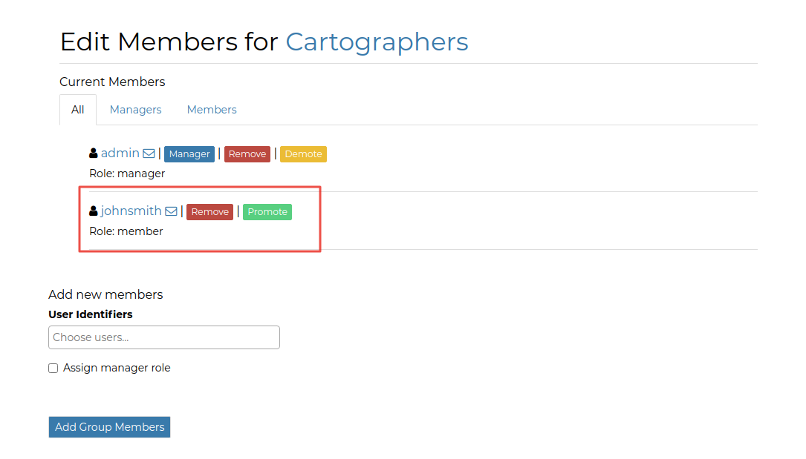
If you want to change the role of group members after adding them, you can use the "promote" button to make a member into a manager, and the "demote" button to make a manager into a regular member.